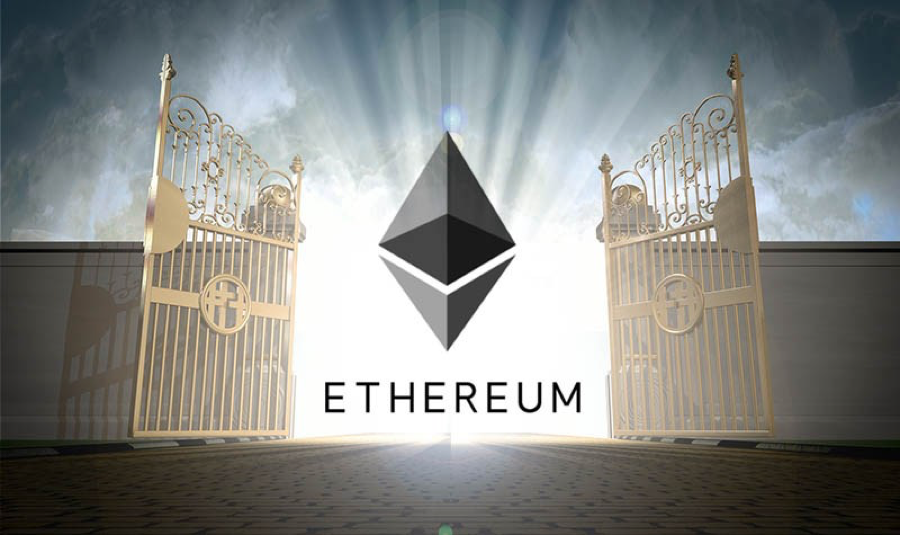

到底什么是以太坊（Ethereum）？
比特币长达8年的成功，将其底层的区块链技术推上了历史的舞台。在全球近一年时间对这项技术的研究后，其价值又大放异彩。现在，区块链技术俨然已经成为了世界的宠儿。无论是各国政府、央行，还是大的银行、投资公司、科技公司、保险公司、金融机构、咨询机构、集团企业、大学，还是不断进入视线的创业公司，越来越多的人和组织都开始关注这项技术。现在谁能聊几句区块链，几乎可以代表着一个人站在了时代的前沿。 区块链是不同与以往的其他技术，它综合了计算机学、经济学、金融学、数学、密码学等的知识，是一项应用起来门槛很高的技术。比如，什么是区块链？如果只是基于口口相传，也许不到两个人，对这项技术的解释已经面目全非。 目前除了比特币之外，最火的区块链技术平台当之无愧属于以太坊了。以太坊因其智能合约、EVM等设计得到了很多区块链应用开发公司的肯定和喜欢。不过，虽然以太坊的社区和Efans遍布全球，但我们发现真正能够准确表达以太坊是什么的人并不多。以至于今天发现在《人民日报》对区块链的报导中，把以太坊当成了金融机构，突然觉得也许该写点什么。作为国内现在并不多的基于以太坊技术开发的创业公司之一灵钛科技，我们有义务来讲讲什么是以太坊。 那，什么是以太坊呢？
以太坊是一种允许用户构建去中心化应用程序的平台，它可以不依赖一个中心机构或代理而存在，并确保可以完全按照程序运行，并能有效抵制意外停机、欺诈和第三方干扰。举个例子，我们用苹果手机，我们熟悉的App是在IOS的平台上，用我们的华为手机，我们的App可能是基于安卓系统平台，那以太坊就是一个区块链应用的平台，类似于IOS和安卓，我们可以在这个平台上搭建区块链的应用。 我们搭建的这些应用程序就运行在这个特定的区块链平台“以太坊”上，它是一个功能强大且共享的全球计算机，可以保存应用程序的逻辑和状态，并在成千上万用户间达成共识。这使得开发人员可以创建市场、存储注册的债券或承诺、依据智能合约（计算机指令）移动资金等。而所有这些事情都没有一个中间人或对手方存在的风险。
那，以太坊是怎么来的呢？
以太坊计划背后的核心理念最初是由19岁的天才少年Vitalik Buterin在2013年11月提出来的。Vitalik Buterin曾经是一名资深的比特币技术研究者，但经过了几年的研究觉得比特币技术缺乏更多的灵活性和可能性，于是他和他的伙伴们一起，创造了以太坊，他希望通过这项技术能够改善这个世界。他也因以太坊的成就在2014年打败了Facebook的创始人扎克伯格，获得了世界科技大奖。 以太坊整个项目是全球开源的，它不是一个公司，也不是一个机构，而只是一个伟大的全球项目。该项目于2014年8月由世界各地的爱好者通过预售代币以太币（Ether）而发起，并随后在瑞士成立了以太坊基金会支持这项开源技术的持续开发。现在，与比特币一样，在全球很多的数字货币交易所，都有以太币（Eth）的交易。 那以太坊基金会又是什么呢？以太坊基金会是一个非盈利组织，主要负责募集和管理来自全球的技术支持资金，来满足整个以太坊项目技术团队的开发和研究需要。
那，以太坊有哪些功能和特点呢？
从技术上讲，以太坊像一个“世界计算机”，一个全世界都可以使用的个人计算机。它理论上只有一个处理器（没有多线程和并行处理），也需要很多内存。任何人都可以上传程序到以太坊这台世界计算机，并且任何人都可以请求已上传的程序被执行。这并不意味着任何人可以要求程序做任何事情；相反，程序的编写者可以指定忽略任何人除了他们自己的请求。在某种意义上说，每个程序在执行间都有永久的存储。另外，只要有需求，以太坊世界计算机将永远不会停机。 从更实际的意义上说，以太坊是一个保证计算的互联网服务平台。此外，作为一个平台，它提供了一组对开发人员非常有用的完整功能，例如：
● 用户认证，通过数字签名的无缝集成。
● 完全可定制的支付逻辑，很容易创建自己的支付系统而不需要依靠第三方。
● 在运行时间100％ddos抗性，通过完全去中心化的的基于区块链的平台来保证。
● 免费存储：无需一个安全的数据库，以太坊可以提供尽可能多的存储空间。
● 终极的互操作性：以太坊生态系统中的一切都可以相互互动，不管是信誉还是传统货币。
● 服务器自由区：你的全部应用程序都可以部署在区块链上，意味着你不用配置和维护服务器；只需让使用你服务的用户支付他们的费用。
在过去二十年里，由于互联网，我们看到服务和基础设施的加速发展，使得很多工作团队或运行业务的花费更少。如eBay、Drivy和Airbnb这些使得建立一个商店、汽车租赁公司以及酒店等更简单。只要人们想要提供的服务适合平台提供的模板，这些平台使得人们可以快速实现他们的想法。以太坊可以看做是一个平台中的平台：它允许人们可以轻易搭建基础设施，从而可以更容易地在互联网上提供新的服务。另外，任何在以太坊上创建的基础设施都可以保证与其他在以太坊上创建的平台交互。更重要的是，由于没有公司或实体组织控制以太坊，运行基础设施不需要获得利润，因此，它的成本更低。随着Mix IDE和Mist浏览器的出现，以太坊作为互联网服务的部署平台的功能将变得更加清晰。越来越多的研究和事实也证明：以太坊有望打破金融和供应链等多元化的行业。
文章转自：灵钛科技官方公众号